User's Manual for qinf Quantum Information and Entanglement Package
v. 0.11 For The Maxima Computer
Algebra System
Copyright (c) 2008 Gerald John Lapeyre Jr.
Permission is granted to copy, distribute and/or modify this document
under the terms of the GNU Free Documentation License, Version 1.2
or any later version published by the Free Software Foundation;
with no Invariant Sections, no Front-Cover Texts, and no Back-Cover Texts.
A copy of the license is included in the distribution of the source
code of the software accompanying this manual in the file fdl.txt.
This quantum information package for the Maxima
computer algebra system allows the manipulation of instances
of objects-- operators, vectors, tensors, etc. that
appear in the theory of quantum information and of quantum
entanglement. More precisely these objects are typically
represented in this package as row and column vectors and
matrices, whose entries may be explicit numbers (of various
classes) or algebraic expressions. This software occupies a
niche distinct from high performance numerical linear
algebra software as well as software such as the Maxima
tensor packages that manipulate abstract mathematical
objects. This document describes the functions and data in
the package and how to use them with Maxima , assuming
that you do not know much about Maxima , but do know
quantum information theory. However, most of the examples
are also found in introductory texts on quantum information.
The package is intended for research and teaching in the
theory of entanglement and quantum information and related
fields.
Examples of the facilities of the
package are
- Methods for constructing pure and mixed states and operators.
- Methods for executing standard operations found in
computational linear algebra as well as the tensor
product, partial trace, etc.
- Functions to compute commonly appearing quantities such as entropy and purity.
This document begins with a very brief introduction to
Maxima emphasizing features that are important for
qinf. The remainder of the manual is a series of small
sections introducing functions with examples. The examples
mostly consist of testing equations. First identities and
textbook exercises are presented, in part because they are
the natural calculations to include in the test suite from
which they are taken. Then more complicated calculations are
tested, as that is the initial application of the author-- to
check manual calculations and results found in other documents.
In this restricted sense, the package can give results on
simple abstract statements: If 1) generic instances of objects are
generated, and 2) a representation-invariant statement is
formulated, and 3) the subexpressions are successfully coerced
into some canonical form, then defects in the statement can
sometimes be detected if the statement is not true.
Some suggestions and things to be aware of in the following sections.
- You probably need to read at least a ten minute
Maxima tutorial before or in conjunction with
reading this document. There are several listed at the
Maxima website, and others that a search engine can
find. If you are too impatient there is a very brief
introduction to Maxima below. The best source for
most questions is the Maxima manual.
- There are several user interfaces to Maxima . All the
examples here are generated using the
imaxima
package
for the emacs editor/environment, but the results are
similar to other graphical frontends to Maxima . Other popular graphical
frontends are wxmaxima,
and texmacs.
- Most functions currently work only with qubits, others for variable number of
states.
Some of the ideas used in qinf are inspired by the package
qdensity
written for a proprietary symbolic algebra system. None of
the code in qdensity has been borrowed for this project,
however. Advice on Maxima and lisp
programming was provided by, among others, Robert Dodier,
Stavros Macrakis, and Barton Willis.
The package is loaded
using the load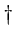function like this
![\begin{boxedminipage}{2.0\linewidth}\index{ {\bf load} \index{load@{\bf load}}}
...
...in{dmath}[number={\%o1}]
\verb\vert qinf.mac\vert\end{dmath}\end{boxedminipage}](img5.png)
There are several tutorials and manuals available for
Maxima. Here is a very brief one focused on aiding the
introduction to the qinf package. We will not give examples
of matrices until later, but point out that the notation for
matrix multiplication in
Maxima is a dot
,
eg. A . B. If
 is a
is a  matix and
matix and  a
a  matrix, then
matrix, then
A . B is a  matrix. The inner
product of quantum state vectors, the
outer product (dyad)
of quantum state vectors, the composition of
operators, and the mapping of one vector to another by an
operator are all special cases of matrix multiplication and
are all represented by the dot (along with conjugation in the case
of the inner and outer products.) The remaining product, the
tensor product, becomes the
Kronecker product in the matrix
representation of a finite dimensional Hilbert space. To
agree with standard terminology, we introduce the
infix
operator otimes and the function tensor_product
that eventually call the Maxima function
kronecker_product . See the
section on matrices
in the Maxima
manual.
matrix. The inner
product of quantum state vectors, the
outer product (dyad)
of quantum state vectors, the composition of
operators, and the mapping of one vector to another by an
operator are all special cases of matrix multiplication and
are all represented by the dot (along with conjugation in the case
of the inner and outer products.) The remaining product, the
tensor product, becomes the
Kronecker product in the matrix
representation of a finite dimensional Hilbert space. To
agree with standard terminology, we introduce the
infix
operator otimes and the function tensor_product
that eventually call the Maxima function
kronecker_product . See the
section on matrices
in the Maxima
manual.
Maxima can use exact real and
complex numbers
or the standard
floating point
approximations, or
arbitrary precision floating point numbers. Numerical expressions are
simplified upon entry. Each input line must be terminated by
a semicolon (some interfaces do this automatically) or by a
dollar sign, which suppresses the output.
![\begin{boxedminipage}{2.0\linewidth}
\begin{verbatim}(%i1) 1 + 1;
\end{verbatim}
\begin{dmath}[number={\%o1}]
2\end{dmath}
\end{boxedminipage}](img11.png)
Assignment
is denoted by a colon while
function definitions
are denoted by
:=
For example, a : b+c ; evaluates b+c and assigns the result to a.
On the other hand a(x,y) := x^y ; defines the function 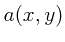.

We suppress the output here with a dollar sign because it's big-  terms.
terms.
![\begin{boxedminipage}{2.0\linewidth}
\begin{verbatim}(%i5) b : expand( (x+y)^5...
...);
\end{verbatim}
\begin{dmath}[number={\%o6}]
51\end{dmath}\end{boxedminipage}](img15.png)
Some exact numbers and floating point
approximations.
![\begin{boxedminipage}{2.0\linewidth}
\begin{verbatim}(%i7) 1 + sqrt(2);
\end{v...
...}
\begin{dmath}[number={\%o8}]
2.4142135623730949\end{dmath}\end{boxedminipage}](img16.png)
Defining
and using a function.
![\begin{boxedminipage}{2.0\linewidth}
\begin{verbatim}(%i9) f(x) := 3 * cos(x);...
...);
\end{verbatim}
\begin{dmath}[number={\%o11}]
3\end{dmath}\end{boxedminipage}](img17.png)
Complex numbers.
%i
is the identifier for
 .
.
![\begin{boxedminipage}{2.0\linewidth}
\begin{verbatim}(%i12) expand ( (1 + 2 * ...
...nd{verbatim}
\begin{dmath}[number={\%o12}]
4\*i-3\end{dmath}\end{boxedminipage}](img20.png)
Some special numbers are defined, such as
%pi
and
%e.
![\begin{boxedminipage}{2.0\linewidth}
\begin{verbatim}(%i13) cos(%pi/2);
\end{v...
...);
\end{verbatim}
\begin{dmath}[number={\%o14}]
i\end{dmath}\end{boxedminipage}](img23.png)
Kets are represented by  matrices, bras by
matrices, bras by  matrices. The objects
are represented in the computational basis. Bras and kets
representing the same states are related by Maxima's conjugate
transpose
function
ctranspose
Density operators and other operators
are represented by matrices. The tensor product
is represented by the Kronecker product. There is no strong
typing. You are responsible for knowing that a particular
vector represents a state vector in a particular space.
Below, we often substitute ``the operator'' for
``the matrix representing the operator''.
matrices. The objects
are represented in the computational basis. Bras and kets
representing the same states are related by Maxima's conjugate
transpose
function
ctranspose
Density operators and other operators
are represented by matrices. The tensor product
is represented by the Kronecker product. There is no strong
typing. You are responsible for knowing that a particular
vector represents a state vector in a particular space.
Below, we often substitute ``the operator'' for
``the matrix representing the operator''.
Here are some methods for creating instances of states, from scratch or
from other states. Although all operators `create' states in this
sense, we omit most of them here, because they are better described as manipulating
states.
create normalized  -partite product states in the computational basis.
In all cases the indices are
-partite product states in the computational basis.
In all cases the indices are  or
or  . The pair
ketz(
. The pair
ketz(
 ) and braz(
) produce
eigenstates of
) and braz(
) produce
eigenstates of
 ,
with the index
,
with the index  selecting the state with eigenvalue and
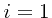 selecting the state with eigenvalue
selecting the state with eigenvalue and
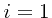 selecting the state with eigenvalue  .
In other words the ket produced represents
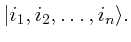
.
In other words the ket produced represents
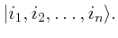
![\begin{boxedminipage}{2.0\linewidth}
\begin{verbatim}(%i3) ketz(1)
\end{verbat...
...\begin{dmath}[number={\%o3}]
\pmatrix{0\cr 1\cr }\end{dmath}\end{boxedminipage}](img35.png)
![\begin{boxedminipage}{2.0\linewidth}
\begin{verbatim}(%i4) braz(1)
\end{verbat...
...th}[number={\%o4}]
\pmatrix{0&\linebreak[0]1\cr }\end{dmath}\end{boxedminipage}](img36.png)
![\begin{boxedminipage}{2.0\linewidth}
\begin{verbatim}(%i5) braz(0)
\end{verbat...
...th}[number={\%o5}]
\pmatrix{1&\linebreak[0]0\cr }\end{dmath}\end{boxedminipage}](img37.png)
Here are the states
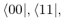 and
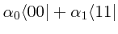. (we show bras rather than
kets to conserve space)
![\begin{boxedminipage}{2.0\linewidth}
\begin{verbatim}(%i6) braz(0,0)
\end{verb...
...ak[0]0&\linebreak[0]0&\linebreak[0]\alpha_{1}\cr }\end{dmath}\end{boxedminipage}](img40.png)
The functions ketx , brax , kety , bray produce
eigenstates of
 ,
or
,
or
 ,
with, as before, the index selecting the state with eigenvalue and
selecting the state with eigenvalue .
,
with, as before, the index selecting the state with eigenvalue and
selecting the state with eigenvalue .
![\begin{boxedminipage}{2.0\linewidth}
\begin{verbatim}(%i9) brax(1)
\end{verbat...
...*\sqrt{2}}&\linebreak[0]\frac{i}{2\*\sqrt{2}}\cr }\end{dmath}\end{boxedminipage}](img43.png)
,
ket_n(
 ) and bra_n(
)
are an alternate way to call ketx, kety, etc. The index
) and bra_n(
)
are an alternate way to call ketx, kety, etc. The index  is mapped to 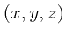 and the appropriate function, eg. ketx is called with
the remaining arguments.
is mapped to 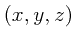 and the appropriate function, eg. ketx is called with
the remaining arguments.
The projection operator
(or equivalently, the density
matrix) corresponding to a state vector is generated via the
outer product, which is represented by the dot operator. A
convenience function proj( ) is also provided to
form a projection operator. The argument ket can be either a bra
or a ket (ie column or row vector). ( proj does not check that
ket is normalized.) Below, we use the Maxima function
ctranspose for the complex transpose.
Here is the outer product, or dyad
) is also provided to
form a projection operator. The argument ket can be either a bra
or a ket (ie column or row vector). ( proj does not check that
ket is normalized.) Below, we use the Maxima function
ctranspose for the complex transpose.
Here is the outer product, or dyad
 .
.
![\begin{boxedminipage}{2.0\linewidth}
\begin{verbatim}(%i19) ketx(1) . brax(1);...
...}{2}\cr -\frac{1}{2}&\linebreak[0]\frac{1}{2}\cr }\end{dmath}\end{boxedminipage}](img49.png)
Compare this to the inner product
![\begin{boxedminipage}{2.0\linewidth}
\begin{verbatim}(%i20) brax(1) . ketx(1);
\end{verbatim}
\begin{dmath}[number={\%o20}]
1\end{dmath}\end{boxedminipage}](img50.png)
Here are different ways to make
 and
and
 .
.
![\begin{boxedminipage}{2.0\linewidth}
\begin{verbatim}(%i21) is ( ketz(0,0,0) ....
...atim}
\begin{dmath}[number={\%o22}]
\mathbf{true}\end{dmath}\end{boxedminipage}](img53.png)
This example used Maxima's
is( )
function which
tries to determine whether the predicate expr is true or false.
)
function which
tries to determine whether the predicate expr is true or false.
There is also a function tovect that
is the inverse (up to a phase) of proj -- it returns the ket corresponding to a
projection operator. If the input matrix is not a projection operator,
the result is undefined.
![\begin{boxedminipage}{2.0\linewidth}
\begin{verbatim}(%i17) is ( tovect( proj(...
...atim}
\begin{dmath}[number={\%o17}]
\mathbf{true}\end{dmath}\end{boxedminipage}](img55.png)
The function tensor_product(
 ), returns
), returns
 , where
, where  are vectors
or matrices. The otimes operator is an `infix' operator
that is equivalent to the function tensor_product.
The function tensor_power(
are vectors
or matrices. The otimes operator is an `infix' operator
that is equivalent to the function tensor_product.
The function tensor_power( ), returns the th
tensor power of the operator
), returns the th
tensor power of the operator op.
Once again, we will employ the
is
function.
Keep in mind that, in this example, the expressions are not
analyzed abstractly, but rather vectors with integer
elements are generated and compared elementwise.
![\begin{boxedminipage}{2.0\linewidth}
\begin{verbatim}(%i12) is (ketz(0,1) = ke...
...atim}
\begin{dmath}[number={\%o14}]
\mathbf{true}\end{dmath}\end{boxedminipage}](img60.png)
schmidt_ket( )creates a ket in the schmidt form. This is
equivalent to
)creates a ket in the schmidt form. This is
equivalent to sqrt(a)*ket(0,0)+ sqrt(1-a)*ket(1,1). This
only works for qubits ( ). Note that you may need to
enter
). Note that you may need to
enter assume(a>0,1-a>0) when manipulating this state
The assumefunction is used to build
a database of facts used, for instance, by the is function.
create vector bell states. bell[a,b] creates the state
|
(1) |
 |
where  . The array belln[i] creates the same states
where
. The array belln[i] creates the same states
where  is the decimal representation of the binary numeration
is the decimal representation of the binary numeration
 . That is,
. That is,  corresponds to
corresponds to
 .
Note that belln[i] is a Maxima
array as indicated by the square
brackets.
.
Note that belln[i] is a Maxima
array as indicated by the square
brackets.
As an exercise, we will check our definitions of the Bell
states by testing for orthonormality. We first define an array
function that returns the inner product of two Bell states.
An array function f[x,y] is like an ordinary function
f(x,y) except that it can be used where an array is
expected.
![\begin{boxedminipage}{2.0\linewidth}
\begin{verbatim}(%i2) f[x,y] := belln[x] ...
...k[0]y}:=\mathrm{belln}_{x}\cdot \mathrm{belln}_{y}\end{dmath}\end{boxedminipage}](img68.png)
Create a  matrix with genmatrix
which maps the two dimension array f over the indices of the matrix with the given range.
matrix with genmatrix
which maps the two dimension array f over the indices of the matrix with the given range.
![\begin{boxedminipage}{2.0\linewidth}
\begin{verbatim}(%i3) genmatrix( f , 3,3,...
...\linebreak[0]0&\linebreak[0]0&\linebreak[0]1\cr
}\end{dmath}\end{boxedminipage}](img70.png)
But instead of the named function f we could have used
just a function body with the
lambda function,
which returns a function that is not bound to a symbol.
![\begin{boxedminipage}{2.0\linewidth}
\begin{verbatim}(%i3) genmatrix( f , 3,3,...
...\linebreak[0]0&\linebreak[0]0&\linebreak[0]1\cr
}\end{dmath}\end{boxedminipage}](img71.png)
It is obviously the identity matrix. The
function identitymatrixp( )
is a predicate defined in the
quantum information package in analogy to the Maxima
function zeromatrixp.
It returns true only if its
argument is an identity matrix. (The symbol
%
refers to the previous output.
)
is a predicate defined in the
quantum information package in analogy to the Maxima
function zeromatrixp.
It returns true only if its
argument is an identity matrix. (The symbol
%
refers to the previous output.
![\begin{boxedminipage}{2.0\linewidth}
\begin{verbatim}(%i5) identitymatrixp(%);...
...batim}
\begin{dmath}[number={\%o5}]
\mathbf{true}\end{dmath}\end{boxedminipage}](img73.png)
In the following sections, we often perform these comparisons in a single line. This
is how the test appears in the regression test suite.
![\begin{boxedminipage}{2.0\linewidth}
\begin{verbatim}(%i6) identitymatrixp(gen...
...batim}
\begin{dmath}[number={\%o6}]
\mathbf{true}\end{dmath}\end{boxedminipage}](img74.png)
We see that these four vectors are orthonormal and thus form a basis in
 .
We can also check that
.
We can also check that
|
(2) |
 |
![\begin{boxedminipage}{2.0\linewidth}
\begin{verbatim}(%i2) identitymatrixp(app...
...batim}
\begin{dmath}[number={\%o2}]
\mathbf{true}\end{dmath}\end{boxedminipage}](img77.png)
The array ghz[ ] contains the GHZ kets defined by
] contains the GHZ kets defined by
|
(3) |
 |
where the bar denotes the logical not operation.
The array ghzn[] is the same array indexed by a single
decimal number equivalent to the binary numeration given by  .
.
The Werner state is defined by
where
 . The qinf function
is
. The qinf function
is werner(a,i,j).
The entropy depends on neither nor  and varies with
and varies with  between
a value of and per bit, as the state is tuned from a pure state to
the uniform mixed state.
between
a value of and per bit, as the state is tuned from a pure state to
the uniform mixed state.
![\begin{boxedminipage}{2.0\linewidth}
\begin{verbatim}(%i2) wxplot2d(entropy(we...
...graphics[width=.5\linewidth]{figs/werner_entropy}
\end{dmath}\end{boxedminipage}](img85.png)
5.1 Pauli matrices
pauli[]
creates the pauli matrices

![\begin{boxedminipage}{2.0\linewidth}
\begin{verbatim}(%i12) [ pauli[0], pauli[...
...&\linebreak[0]0\cr 0&\linebreak[0]-1\cr } \right] \end{dmath}\end{boxedminipage}](img87.png)
Show that the ket
 is an eigenvector of
is an eigenvector of  with eigenvalue .
with eigenvalue .
![\begin{boxedminipage}{2.0\linewidth}
\begin{verbatim}(%i8) is ( pauli[1] . ket...
...batim}
\begin{dmath}[number={\%o8}]
\mathbf{true}\end{dmath}\end{boxedminipage}](img90.png)
Here are we check that all our definitions of the pauli matrices and kets are
consistent in this sense.
![\begin{boxedminipage}{2.0\linewidth}
\begin{verbatim}(%i9) mapapply( lambda([i...
...]\mathbf{true},\linebreak[0]\mathbf{true} \right] \end{dmath}\end{boxedminipage}](img91.png)
Here we use anticommutator( ) to test the anticommutation relations among
the pauli matrices:
) to test the anticommutation relations among
the pauli matrices:
 for
for

![\begin{boxedminipage}{2.0\linewidth}
\index{genmatrix@{\bf genmatrix}}
\begin{ve...
...ix{1&\linebreak[0]0\cr
0&\linebreak[0]1\cr }\cr }\end{dmath}\end{boxedminipage}](img95.png)
The Maxima function
mat_unblocker,
flattens the
blocks in the above expression, so we can write
![\begin{boxedminipage}{2.0\linewidth}
\begin{verbatim}(%i4) identitymatrixp( ma...
...atim}
\begin{dmath}[number={\%o4}]
\mathbf{true}\end{dmath} \end{boxedminipage}](img96.png)
Now we load the
itensor package, which provides the levi-civita tensor, and make use of the
Maxima functions
permutations
(which returns
the set
of all permutations of a list)
and listify (which converts the set data type into the (ordered) list data type).
The qinf package provides
mapapply(
![$func,[list1, list2,\ldots]$](img97.png) ), which
apply s func to each of the lists and
returns a list of the results. (see the Maxima
documentation for
apply.) With all these, we can test
the commutation relations of the pauli
matrices. (In reality, the matrix definitions are not
complicated, we are actually testing the other functions.):
), which
apply s func to each of the lists and
returns a list of the results. (see the Maxima
documentation for
apply.) With all these, we can test
the commutation relations of the pauli
matrices. (In reality, the matrix definitions are not
complicated, we are actually testing the other functions.):
![$[\sigma_i,\sigma_j] = 2i\epsilon_{i,j,k}\sigma_k$](img98.png) .
.
![\begin{boxedminipage}{2.0\linewidth}
\begin{verbatim}(%i5) load(''itensor'');
...
...]\mathbf{true},\linebreak[0]\mathbf{true} \right] \end{dmath}\end{boxedminipage}](img99.png)
pauli_product(
 ) returns the tensor product
) returns the tensor product
 , where the indices
, where the indices
 are in
are in  . As elsewhere in this document,
. As elsewhere in this document,  is
the
is
the  identity matrix.
identity matrix.
The next three functions
pauliexp( ), invpauliexp(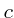), and correlation_tensor(
), invpauliexp(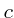), and correlation_tensor(
 )
are related. An example using them follows their definitions.
)
are related. An example using them follows their definitions.
pauliexp() returns the correlation tensor,
that is, the coefficients in the expansion of the matrix
in tensor products of pauli matrices. Explicitly, pauliexp
returns the coefficients
 in
in
|
(4) |
 |
must be a  matrix. The coefficients are returned as a list
of elements. The place of
in the returned list is determined
by taking
to be the binary representation of an integer. For convenience,
the coefficient can be retrieved by index with the function correlation_tensor.
matrix. The coefficients are returned as a list
of elements. The place of
in the returned list is determined
by taking
to be the binary representation of an integer. For convenience,
the coefficient can be retrieved by index with the function correlation_tensor.
invpauliexp() is the inverse of pauiexp. Given a list representing
the correlation tensor (i.e. expansion coefficients),
invpauliexp returns the matrix given by (4).
correlation_tensor(
) returns the expansion coefficient for
the term
in the expansion of
, where is the list of coefficients in the expansion of as given,
for instance, by pauliexp.
Here is an example using the three functions defined above.
First we create three generic (complex) matrices.
![\begin{boxedminipage}{2.0\linewidth}
\begin{verbatim}(%i2) m1 : matrix([a1,b1]...
...2,d2]) $
(%i4) m3 : matrix([a3,b3],[c3,d3]) $
\end{verbatim}
\end{boxedminipage}](img112.png)
Here is the tensor product of the three matrices. This is not a generic element in
the three qubit Hilbert space represented by
 . For instance,
the three matrices have
. For instance,
the three matrices have  complex parameters while a generic matrix in
the tensor product space has
complex parameters while a generic matrix in
the tensor product space has  complex parameters.
complex parameters.
![\begin{boxedminipage}{2.0\linewidth}
\begin{verbatim}(%i5) mp : m1 otimes m2 o...
...break[0]\mathrm{d1}\*\mathrm{d2}\*\mathrm{d3}\cr }\end{dmath}\end{boxedminipage}](img116.png)
We compute the correlation tensor of mp

Check that the tensor has elements and see what a coefficient looks like.

Check that the inverse of the expansion gives the original matrix back
![\begin{boxedminipage}{2.0\linewidth}
\begin{verbatim}(%i9) is ( ratsimp( invpa...
...batim}
\begin{dmath}[number={\%o9}]
\mathbf{true}\end{dmath}\end{boxedminipage}](img119.png)
Here is the convenience function to return an element of the correlation tensor by index

spinor_rotation(
 ) returns the matrix that represents
the operator that rotates a spinor through an angle gamma about the axis specified by
phi (angle about the
) returns the matrix that represents
the operator that rotates a spinor through an angle gamma about the axis specified by
phi (angle about the  -axis) and theta (inclination from the -axis). The function spinor_rotation_trig(
)
returns the same matrix expressed only with cosines and sines. This is the standard
axis-angle parameterization. Explicitly the matrices are
-axis) and theta (inclination from the -axis). The function spinor_rotation_trig(
)
returns the same matrix expressed only with cosines and sines. This is the standard
axis-angle parameterization. Explicitly the matrices are

insert_operator(
![$nbits,[op1,i1,i2,..],[op2,j2,j2,...],...$](img124.png) ) returns
the operator
) returns
the operator
 , with some of the identity operators
, with some of the identity operators
 substituted by the operators op1,op2,... at the indices specified
by the indices
substituted by the operators op1,op2,... at the indices specified
by the indices
 . Each replacement operator replaces a single
qubit identity operator , even if the replacement operator has dimension
other than
. Each replacement operator replaces a single
qubit identity operator , even if the replacement operator has dimension
other than  .
For example
.
For example
insert_operator(8,[pauli[1],1,3],[pauli[2],2,5],[pauli[3],8])
returns
insert_operator is used to build the operators and gates listed below.
5.4 Gates
qinf defines both a variable and a function named hadamard.
The value of the variable hadamard is as follows,
![\begin{boxedminipage}{2.0\linewidth}
\begin{verbatim}(%i2) hadamard;
\end{verb...
...1}{\sqrt{2}}&\linebreak[0]-\frac{1}{\sqrt{2}}\cr }\end{dmath}\end{boxedminipage}](img130.png)
The function hadamard(
 ) returns the tensor product
of nbits one-qubit operators each of which is except
for the operators in positions i1,i2,... which are the hadamard
operator given by the variable hadamard. The function is defined
by
) returns the tensor product
of nbits one-qubit operators each of which is except
for the operators in positions i1,i2,... which are the hadamard
operator given by the variable hadamard. The function is defined
by hadamard(nbits,[t]) := insert_operator(nbits,cons(hadamard,t)),
which is an idiom that will work for similar user defined functions as well.
The dummy argument [t] causes all arguments after nbits to
be collected in a single list. The Maxima function
cons, invoked as cons(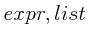),
returns the list given by prepending
expr to the list list.
A controlled gate applies an operator  to a single qubit (the target) in a register only if
each of a set of control qubits is set. Otherwise the operator is equivalent to
the identity operator. In any case, the operator is the identity on every
qubit other than the target.
The function controlled_gate(
to a single qubit (the target) in a register only if
each of a set of control qubits is set. Otherwise the operator is equivalent to
the identity operator. In any case, the operator is the identity on every
qubit other than the target.
The function controlled_gate(
 )
creates a controlled gate with one or more control qubits embedded in
a
)
creates a controlled gate with one or more control qubits embedded in
a nbits-qubit operator. The target qubit is at the index t,
while the control qubits are at the indices listed in the list clst.
In the returned operator, the operator is at the remaining positions.
The controlled gate operator applies qop at qubit t if all of
the control qubits are set (ie are ) and is equivalent to the identity operator
otherwise.
For instance a cnot operator on
 is given by
is given by
controlled_gate(2,pauli[1],2,[1]).
The controlled gate in an -qubit space with  control bits and
the -qubit target operator is implemented in qinf as
control bits and
the -qubit target operator is implemented in qinf as
In the case that this controlled gate operator is embedded in an operator in a larger space,
the same formula is used, with additional factors of inserted at the
appropriate places. Also the target qubit may occupy any index. This is implemented
via the insert_operator function described above.
cnot(
 ) returns a cnot gate on an
) returns a cnot gate on an nbits-qubit
register with the target at index t and control qubits at indices
c1,c2,.... The definition of this function is
cnot(nbits,t,[c]) := controlled_gate(nbits,pauli[1],t,c).
The functions cphase and crot are defined in the same way except
that operators pauli[3] and %i*pauli[2] respectively are
substituted for pauli[1]. For example, the elementary cnot gate
is given by cnot(2,2,1).
swap( ) returns the operator that swaps qubits
) returns the operator that swaps qubits t1
and t2 in an nbits-qubit register. It is defined by
swap(nbits,t1,t2) := cnot(nbits,t1,t2) . cnot(nbits,t2,t1) . cnot(nbits,t1,t2).
This function is provided for convenience. It is defined by
toffoli(nbits,t,c1,c2) := cnot(nbits,t,c1,c2). Note that there
are exactly two control qubits.
fredkin( ) is controlled swap operator. The qubits at indices
) is controlled swap operator. The qubits at indices
t1 and t2 are swapped if the control qubit at index c is set.
Now we are ready to introduce features that are more
specific to the study quantum entanglement. Included here
are measures of the degree of purity and measures
of the degree of entanglement. For a review of quantum
entanglement, see Ref.[1].
compute the partial trace of the density
operator over the component spaces given by the indices.
For ptrace(
 ) the density matrix is assumed to represent
an operator in
) the density matrix is assumed to represent
an operator in
 , with
, with  , that is
a tensor product of qubit spaces. For ptracen(
, that is
a tensor product of qubit spaces. For ptracen(
 ) the component
spaces are all -state qudits.
) the component
spaces are all -state qudits.
In this example we create three arbitrary  matrices, and check that
matrices, and check that
and that
Notice that we use the Maxima function
ratsimp to put both sides of the
equation in the same canonical form. We also make
use of Maxima's
mat_trace
function ( so named to avoid conflicting
with the code-execution trace function) and Maxima's
matrix function, which creates a matrix
from a list of rows.
![\begin{boxedminipage}{2.0\linewidth}
\begin{verbatim}(%i1) m1 : matrix([a1,b1,...
...batim}
\begin{dmath}[number={\%o5}]
\mathbf{true}\end{dmath}\end{boxedminipage}](img148.png)
Here we trace over one component repeatedly and check that the result is
equal to the full trace. Note that, each time, we are tracing over the new
first component.

entropy() returns the von Neumann entropy of
the density matrix defined by
|
(5) |
 |
entropyf is the floating point version of entropy.
renyi_entropy(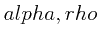) gives the Rényi entropy, defined by
|
(6) |
 |
renyi_entropyf is the floating point version of renyi_entropy.
tsallis_entropy( ) gives the Tsallis entropy, defined by
) gives the Tsallis entropy, defined by
|
(7) |
 |
tsallis_entropyf is the floating point version of tsallis_entropy.
purity() returns the purity of the
density matrix defined by
 . The purity
is for a pure state and is less than for a mixed state.
. The purity
is for a pure state and is less than for a mixed state.
fidelity( ) returns the scalar valued fidelity
of the density matrices
) returns the scalar valued fidelity
of the density matrices  and
and  defined by
defined by
The concurrence of a two-qubit state
is defined by
 ),
where the 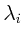 are the eigenvaluse of
),
where the 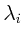 are the eigenvaluse of
in decreasing order[2]
concurrence(rho) returns the concurrence of the state rho.
concurrence_vals(rho) returns a list of the square roots of
the eigenvalues in decreasing order, to the extent that Maxima
can determine the order.
6.8 separable -- test for separability
This currently accepts only pure, bipartite states.
separable( ) attempts to determine if e is a separable
state. separable returns a scalar value
) attempts to determine if e is a separable
state. separable returns a scalar value  . If
. If  , then
e is separable. If 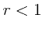, it is not. Explicitly, the value
returned for the state with density operator
, then
e is separable. If 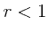, it is not. Explicitly, the value
returned for the state with density operator  is
is

When other methods are added, the organization and naming of the tests may
change.
We examine a textbook example of entanglement-- the joint
state of two qubits. The state of the whole system is pure,
but the local states are mixed. We begin by creating a
joint state of two qubits in Schmidt basis
 In order to see the mixed
character of the local states, we need to express the full
state as a density operator (or equivalently as a projection
operator.) Let's try to make
In order to see the mixed
character of the local states, we need to express the full
state as a density operator (or equivalently as a projection
operator.) Let's try to make
 .
.
![\begin{boxedminipage}{2.0\linewidth}
\begin{verbatim}(%i2) pr : proj(schmidt_k...
...k[0]\sqrt{1-\alpha}^{\star}\*\sqrt{1-\alpha}\cr }
\end{dmath}\end{boxedminipage}](img170.png)
We see that Maxima is allowing that the quantities under the radicals may be negative. So
we set some rules, and try again.
![\begin{boxedminipage}{2.0\linewidth}
\begin{verbatim}(%i3) assume(alpha>0, 1-a...
...reak[0]0&\linebreak[0]0&\linebreak[0]1-\alpha\cr }\end{dmath}\end{boxedminipage}](img171.png)
The entropy
vanishes for a pure state, so that
 is
is
![\begin{boxedminipage}{2.0\linewidth}
\begin{verbatim}(%i6) entropy(pr);
\end{verbatim}
\begin{dmath}[number={\%o7}]
0\end{dmath}\end{boxedminipage}](img173.png)
The purity is equal to if and only if is a pure state.
![\begin{boxedminipage}{2.0\linewidth}
\begin{verbatim}(%i8) purity(pr);
\end{ve...
...%);
\end{verbatim}
\begin{dmath}[number={\%o9}]
1\end{dmath}\end{boxedminipage}](img174.png)
Now we compute the reduced density matrix of the second qubit by tracing over the first--

![\begin{boxedminipage}{2.0\linewidth}
\begin{verbatim}(%i10) pr2 : ptrace(pr,1)...
...pha&\linebreak[0]0\cr 0&\linebreak[0]1-\alpha\cr }\end{dmath}\end{boxedminipage}](img176.png)
Tracing over the second qubit instead gives the same result
![\begin{boxedminipage}{2.0\linewidth}
\begin{verbatim}(%i10) pr2 : ptrace(pr,1)...
...pha&\linebreak[0]0\cr 0&\linebreak[0]1-\alpha\cr }\end{dmath}\end{boxedminipage}](img177.png)
Computing
the entropy of a local state
shows that this state is, in general, mixed

Each eigenvalue satisfies
 , so that the sum of their squares is less than
one
, so that the sum of their squares is less than
one
![\begin{boxedminipage}{2.0\linewidth}
\begin{verbatim}(%i13) purity(pr2);
\end{...
...er={\%o13}]
\alpha^{2}+\left(1-\alpha\right)^{2}\end{dmath} \end{boxedminipage}](img180.png)
We
can plot the results (the plot function plot2d is more
common, depending on your user interface. wxplot2d has
the same calling syntax, but inlines the resulting plot.) We
see that the maximum entanglement occurs at 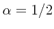 and
decreases monotonically from there in both directions, with
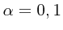 giving pure joint states.
![\begin{boxedminipage}{2.0\linewidth}
\begin{verbatim}(%i14) wxplot2d([entropy(...
...graphics[width=.5\linewidth]{figs/entropy_purity}
\end{dmath}\end{boxedminipage}](img183.png)
Unless noted, all functions return either true or false.
identitymatrixp() returns true if e is the 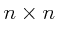 identity
matrix for any .
ketp() returns true if the expression e is a ket
(column vector).
brap() returns true if the expression e is a bra
(row vector).
braketp()
returns (ketp(e) or brap(e)), ie returns true if e is either a ket or
a bra.
square_matp() returns true if e is a square matrix.
normalize_vector( ) returns
) returns
 .
normalize_matrix() returns
.
normalize_matrix() returns
 .
.
8.1 Entanglement swapping
In this subsection, we check a calculation that would
be relatively difficult to check by hand.
Consider a pair of entangled qubits and , and another
entangled pair  and
and  . By performing a joint
measurement on, say and , we can put and in
an entangled state although they may be widely separated.
We begin by considering the most general projective measure
on and , and calculate the reduced density matrix for
a single qubit and the probability of outcome. In this
example we calculate these quantities two ways-- one,
directly from the density matrix formalism, and two, via
formulas taking advantage of the particulars of this
problem. To do the first calculation by hand would be
extremely unpleasant, as it involves multiplying
. By performing a joint
measurement on, say and , we can put and in
an entangled state although they may be widely separated.
We begin by considering the most general projective measure
on and , and calculate the reduced density matrix for
a single qubit and the probability of outcome. In this
example we calculate these quantities two ways-- one,
directly from the density matrix formalism, and two, via
formulas taking advantage of the particulars of this
problem. To do the first calculation by hand would be
extremely unpleasant, as it involves multiplying  matrices with several factors in a single element. Carrying
it out below with Maxima is a concise exercise.
At present this example does not continue by discussing
the measurements that maximize the resulting entanglement
of and .
matrices with several factors in a single element. Carrying
it out below with Maxima is a concise exercise.
At present this example does not continue by discussing
the measurements that maximize the resulting entanglement
of and .
Qubits and are in the state
and are in the state
with the Schmidt coefficients
satisfying
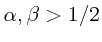.
For now, we only want to tell Maxima that the coefficients
of the kets are real.

We consider the projective measurement  , that is
, that is
 and
and
 . We consider only a single basis vector
here, so we don't use the subscript for Maxima vector name.
We need to use Maxima's
declare to declare that
the components are complex.
The state
. We consider only a single basis vector
here, so we don't use the subscript for Maxima vector name.
We need to use Maxima's
declare to declare that
the components are complex.
The state
 is normalized, but we don't need to impose that condition in
Maxima at this point.
is normalized, but we don't need to impose that condition in
Maxima at this point.

The initial joint state
 is pure and remains
so after the measurement applying
is pure and remains
so after the measurement applying
 to qubits and .
But we write the density operator
because we will examine the reduced states, which are mixed.
In the case that and are projected onto
, the state
of the entire system of four qubits after the measurement is given by
to qubits and .
But we write the density operator
because we will examine the reduced states, which are mixed.
In the case that and are projected onto
, the state
of the entire system of four qubits after the measurement is given by
|
(8) |
 |
with

where conjsimp
(supplied via the Maxima listserv by Barton Willis) replaces  with
with  ,
and 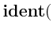n
,
and 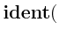n
 is the identity matrix.
The output was suppressed with the trailing dollar sign because the is
a matrix with large expressions for entries.
The reduced state of qubits and is obtained by tracing out components and
is the identity matrix.
The output was suppressed with the trailing dollar sign because the is
a matrix with large expressions for entries.
The reduced state of qubits and is obtained by tracing out components and
 corresponding to qubits and , ie
corresponding to qubits and , ie
 .
.

Likewise, the reduced state of just qubit is
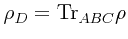.

The second method of calculating  is as follows.
Considering the following map from
to
is as follows.
Considering the following map from
to
 :
:
|
(9) |
 |
one can show that is equal to
 , with
, with
 .
The Maxima function implementing the mapping (9) is
.
The Maxima function implementing the mapping (9) is
![\begin{boxedminipage}{2.0\linewidth}
\begin{verbatim}(%i10) ket_to_mat(iket) :...
...[iket[1,1],iket[2,1]],[iket[3,1],iket[4,1]])$
\end{verbatim}
\end{boxedminipage}](img218.png)
Then the second calculation of  , which we call
, which we call rho_4a is given by
the following lines.

We compare (%o9) and (%o13), to see that the two methods of calculating
the reduced state for qubit after the measurement give the same result
![\begin{boxedminipage}{2.0\linewidth}
\begin{verbatim}(%i14) is ( ratsimp(rho_4...
...atim}
\begin{dmath}[number={\%o14}]
\mathbf{true}\end{dmath}\end{boxedminipage}](img221.png)
Now we compute the probability
 that the state is in fact projected onto
.
that the state is in fact projected onto
.

Finally, we compare this to the trace computed by hand from the expression following (9),
which is given by
|
(10) |
 |
where
 ,
,

Here we have used Maxima's
apply and
create_list functions.
Once again we compare the probabilities computed via the two methods
![\begin{boxedminipage}{2.0\linewidth}
\begin{verbatim}(%i19) is (ratsimp(P1) = ...
...atim}
\begin{dmath}[number={\%o19}]
\mathbf{true}\end{dmath}\end{boxedminipage}](img227.png)
and see that they give the same result.
- 1
-
R. Horodecki, P. Horodecki, M. Horodecki, and K. Horodecki.
Rev. Mod. Phys., 2008.
to appear.
http://arxiv.org/abs/arXiv:quant-ph/0702225v2.
- 2
-
William K. Wootters.
Entanglement of formation of an arbitrary state of two qubits.
Phys. Rev. Lett., 80:2245-2248, 1998.
http://arxiv.org/abs/arXiv:quant-ph/9709029v2.
- base of natural log
- 2
- anticommutator
- 5.1.1
- apply
- 5.1.1
| 5.1.1
| 8.1
- array
- 4.6
- arrays
- array functions
- 4.6
- assignment
- 2
- assume
- 4.5
| 6.9
| 8.1
- bell
- 4.6
- Bell states
- 4.6
- belln
- 4.6
- bra_n
- 4.2
- braketp
- 7.1.2
- brap
- 7.1.2
- brax
- 4.1
| 4.1
- bray
- 4.1
| 4.1
- braz
- 4.1
- cnot
- 5.4.2
| 5.4.3
- commutator
- 5.1.1
- complex numbers
- 2
- declaring variable complex
- 8.1
- concurrence
- 6.7
- conjsimp
- 8.1
- conjugate transpose
- 3
- cons
- 5.4.1
- controlled_gate
- 5.4.2
- correlation tensor
- 5.1.3
- correlation_tensor
- 5.1.5
- cphase
- 5.4.3
- create_list
- 8.1
- crot
- 5.4.3
- ctranspose
- 3
| 4.3
- declare
- 8.1
- density operator
- of a pure state
- 4.3
- dot product
- 2
- dyad
- 2
| 4.3
- emacs
- 1
- entanglement swapping
- no title
- entropy
- 6.2
- of a pure state
- 6.9
- of a reduced state
- 6.9
- of Werner state
- 4.8
- Rényi
- 6.3
- Tsallis
- 6.4
- von Neumann
- 6.2
- entropyf
- 6.2
- equality
- testing for
- 4.3
- expand
- 2
- fidelity
- 6.6
- fredkin
- 5.4.6
- functions
- user defined
- 2
| 2
- gates
- 5.4
- genmatrix
- 4.6
- gzh
- 4.7
- gzhn
- 4.7
- hadamard
- 5.4.1
- hermitian conjugate
- 3
- identity matrix
- creating
- 8.1
- testing for
- 4.6
| 7.1.1
- identitymatrixp
- 4.6
| 7.1.1
- imaginary unit
- 2
- imaxima
- 1
- infix
- 2
- inner product
- 2
- of state vectors
- 4.3
- insert_operator
- 5.3
- invpauliexp
- 5.1.4
- is
- 4.3
| 4.4
| 4.5
- itensor
- 5.1.1
- ket_n
- 4.2
- ketp
- 7.1.2
- kets
- creating a ket
- see states
- representation
- 3
- ketx
- 4.1
| 4.1
- kety
- 4.1
| 4.1
- ketz
- 4.1
- kronecker_product
- 2
- lambda
- 4.6
- levi-civita tensor
- 5.1.1
- listify
- 5.1.1
- loading qinf
- 2
- mapapply
- 5.1.1
- mat_trace
- 6.1
- mat_unblocker
- 5.1.1
- matrix
- 6.1
- creating
- 6.1
- multiplication
- 2
- trace
- 6.1
- normalize_matrix
- 7.2.2
- normalize_vector
- 7.2.1
- orthonormality
- of Bell states
- 4.6
- otimes
- 2
| 4.4
- outer product
- 2
- of state vectors
- 4.3
- pauli
- 5.1.1
- pauli matrices
- 5.1
- pauli_product
- 5.1.2
- pauliexp
- 5.1.3
- permutations
- 5.1.1
- pi

- 2
- plot2d
- 6.9
- plotting
- 6.9
- proj
- 4.3
| 4.3
| 4.3
- projection operator
- 4.3
- projective measure
- 8.1
- ptrace
- 6.1
| 6.1
| 8.1
| 8.1
- ptracen(
)
- 6.1
| 6.1
- purity
- 6.5
| 6.9
- qdensity
- 1.1
- ratsimp
- 6.1
- reduced state
- 8.1
- renyi_entropy
- 6.3
- renyi_entropyf
- 6.3
- rotation
- spinor
- 5.2
- Schmidt basis
- 4.5
- Schmidt coefficients
- 8.1
- schmidt_ket
- 4.5
- separability
- 6.8
- separable
- 6.8
- simplified
- 2
- spinor_rotation
- 5.2
- spinor_rotation_trig
- 5.2
- square_matp
- 7.1.3
- states
- creating a ket
- 4.1
- suppressing output
- 2
- swap
- 5.4.4
- tensor power
- 4.4
- tensor product
- 2
| 4.4
- matrix representation
- 3
- tensor_power
- 4.4
- tensor_product
- 2
| 4.4
- texmacs
- 1
- toffoli
- 5.4.5
- tovect
- 4.3
- trace
- of matrix
- 6.1
- partial trace of matrix
- 6.1
- tsallis_entropy
- 6.4
- tsallis_entropyf
- 6.4
- werner
- 4.8
- Wootter
- 6.7
- wxmaxima
- 1
- wxplot2d
- 6.9
- zeromatrixp
- 4.6
John Lapeyre
2008-09-02